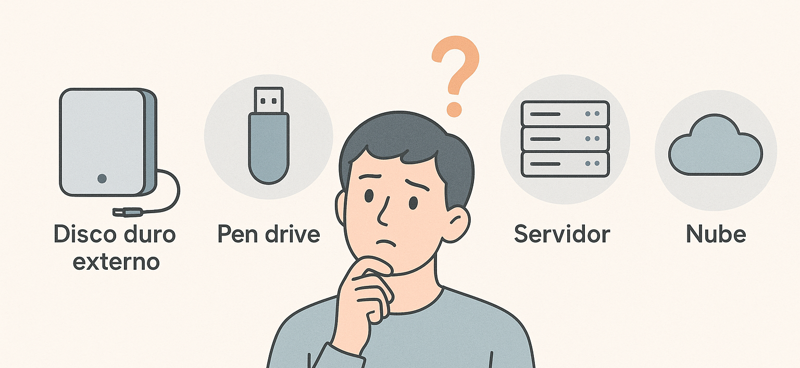
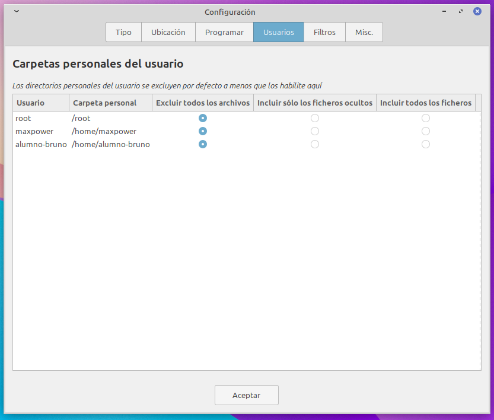
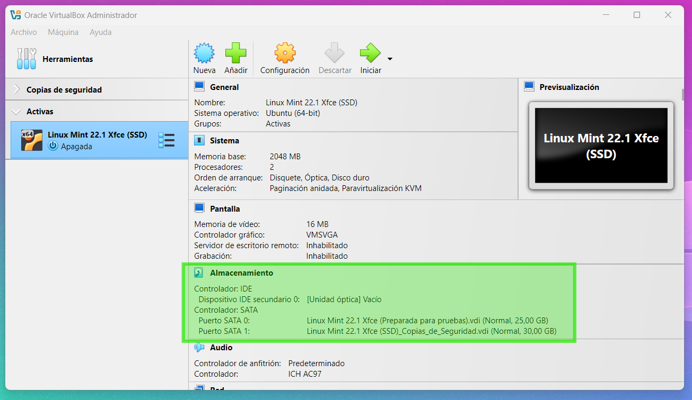

Tema 06 - Copias de seguridad🛟1. Introducción🧩2. Tipos de copias de seguridad2.1 Copia completa 2.2 Copia incremental 2.3 Copia diferencial 2.4 Copia continua 2.5 Control de versiones2.6 Apéndice visual💾3. Dónde almacenar las copias3.1 Almacenamiento local 3.2 Servidores internos 3.3 Almacenamiento en la nube 📆4. Frecuencia y planificación4.1 ¿Cada cuánto tiempo?4.2 Ventanas de respaldo4.3 PolÃticas de retención y versionado🧰5. Herramientas para realizar backups5.1 Herramientas integradas🪟 Windows🧠Linux5.2 Software especÃfico para copias de seguridad📋6. Buenas prácticas6.1 Regla 3-2-16.2 Verificación y pruebas de restauración6.3 Cifrado y protección de los backups6.4 Accesos y permisos🧪7. Práctica guiada🪟 Windows🧠LinuxParte 1/2: Añadir disco duroParte 2/2: Probar la copia de seguridad✅8. Resumen del tema🧪9. Test Tema 6: Copias de seguridad
Tema 06 - Copias de seguridad
🛟1. Introducción
Las copias de seguridad (o backups) son como los airbags de un coche: ojalá no tengas que usarlos nunca… pero cuando los necesitas, te salvan el dÃa.
En informática, los errores, accidentes o ataques pueden provocar pérdidas de datos crÃticas. Archivos eliminados por error, discos duros que fallan, ransomware que cifra todo lo que toca... La única defensa infalible en estos casos es tener una copia de seguridad fiable y actualizada.
Important
En entornos profesionales, no hacer copias de seguridad no es solo una imprudencia: es una irresponsabilidad.
En este tema veremos:
Los distintos tipos de copias de seguridad (competa, incremental, diferencial, continua).
Dónde almacenarlas (local, en red o en la nube).
Con qué frecuencia conviene hacerlas y cómo planificarlas.
Qué herramientas existen para automatizarlas y gestionarlas.
Prácticas recomendadas para proteger los backups y garantizar su utilidad.
Spoiler: al acabar este tema, mirarás tu carpeta de documentos con otros ojos.
🧩2. Tipos de copias de seguridad
No todas las copias de seguridad son iguales. Dependiendo de cuánto tiempo tengas, cuántos recursos dispongas y qué tan importante sea la información, puedes elegir entre distintos tipos de backup. Aquà te explicamos los principales:
2.1 Copia completa
Hace una copia de todos los archivos seleccionados, independientemente de si han cambiado o no.
Note
Es la más segura, pero también la más lenta y pesada.
✅ Ventajas:
Restaura todo rápidamente sin depender de otras copias.
Más simple de gestionar.
⌠Inconvenientes:
Requiere más espacio.
Tarda más tiempo.
2.2 Copia incremental

Solo copia los archivos que han cambiado desde la última copia, ya sea completa o incremental.
Tip
Ideal para copias diarias rápidas con poco consumo de recursos.
✅ Ventajas:
Ocupa muy poco espacio.
Rápida de ejecutar.
⌠Inconvenientes:
Para restaurar, necesitas la última copia completa y todas las incrementales posteriores.
Más compleja de gestionar.
2.3 Copia diferencial
Copia los archivos que han cambiado desde la última copia completa, sin importar si ya se copiaron en una anterior.
✅ Ventajas:
Restauración más sencilla que con la incremental (solo necesitas la última completa y la última diferencial).
Compromiso entre velocidad y simplicidad.
⌠Inconvenientes:
Con el tiempo, puede ocupar casi tanto como una copia completa.
2.4 Copia continua
También llamada CDP (Continuous Data Protection). Es un sistema que realiza copias en tiempo real o casi en tiempo real, cada vez que un archivo cambia.
Important
Se usa sobre todo en entornos empresariales donde la pérdida de unos pocos minutos de trabajo puede suponer pérdidas económicas importantes.
✅ Ventajas:
Copia inmediata ante cualquier cambio.
Permite restaurar el estado exacto de un archivo en un momento determinado.
⌠Inconvenientes:
Necesita herramientas especializadas.
Requiere recursos constantes.
2.5 Control de versiones
Warning
Aunque permiten recuperar versiones anteriores, no protegen ante fallos de hardware, ransomware o pérdida total del dispositivo si no están sincronizados con un repositorio remoto.
También llamadas CVS (Control Version System). Herramientas como Git, Subversion o Mercurial sirven para llevar un registro de cambios en archivos, especialmente en proyectos de desarrollo de software. Aunque no se consideran copias de seguridad como tal.
Este tipo de sistemas permite:
Volver a versiones anteriores del código
Comparar cambios
Trabajar en equipo sin sobrescribir archivos
Tip
Aunque Git guarda versiones anteriores, no está pensado como una copia de seguridad. Su objetivo es el seguimiento de cambios, no la protección contra fallos del sistema.
✅ ¿Qué protege Git?
Errores humanos al editar o borrar código
Descoordinación en proyectos colaborativos
Historial detallado de modificaciones
⌠¿Qué no protege Git?
Fallos del disco duro
Ransomware o malware que cifre el repositorio
Eliminación total del repositorio local y remoto
Caution
Si solo usas Git en local y no haces copia del repositorio, lo puedes perder todo igual.
Note
¿Qué es GitHub?
GitHub es una plataforma online donde se pueden alojar proyectos que usan Git.
Permite guardar tus repositorios en la nube, colaborar con otras personas, reportar errores y mucho más.
Aunque mucha gente piensa que "GitHub es Git", en realidad Git es la herramienta y GitHub es el servicio donde puedes usarla de forma remota.
GitHub puede ser una copia de seguridad de tu código, pero no de tu sistema. Es una excelente herramienta para proteger proyectos de desarrollo, pero no sustituye una polÃtica de backup general.
2.6 Apéndice visual
A continuación se muestra una representación gráfica de los diferentes tipos de copias de seguridad. Vamos a interpretar qué significa cada imagen:
Tip
Esta imagen puede ayudarte a recordar rápidamente las diferencias clave entre los tipos de copia de seguridad. Si tienes dudas, vuelve a este bloque visual.
🟦 Copia completa: Un único archivo de ordenador hacia un servidor, con una flecha ancha.
🔠Interpretación:
La flecha gruesa simboliza que se realiza una copia total de todos los archivos del sistema.
No se discrimina qué ha cambiado: todo se copia siempre, ocupando más espacio y tiempo.
🟦 Copia incremental: Múltiples flechas pequeñas desde el ordenador hacia el servidor.
🔠Interpretación:
Las flechas delgadas y múltiples indican que se copian solo los archivos modificados desde la última copia.
Representa un proceso más eficiente, ideal para realizar copias diarias sin saturar el sistema.
🟦 Copia diferencial: Tres flechas de distinto tono apuntando al servidor.
🔠Interpretación:
Se copian los archivos modificados desde la última copia completa, aunque algunos ya se hayan copiado en dÃas anteriores.
El resultado es una copia más rápida que una completa, pero más pesada que una incremental.
🟦 Copia continua (CDP): Un portátil conectado a una nube con un sÃmbolo de sincronización.
🔠Interpretación:
Representa una copia automática y constante cada vez que se realiza un cambio.
El sÃmbolo de sincronización refleja la idea de protección en tiempo real, sin esperar a programaciones manuales.
💾3. Dónde almacenar las copias

Elegir el lugar adecuado donde guardar nuestras copias de seguridad es casi tan importante como hacerlas. No sirve de mucho tener una copia si está en el mismo disco que los archivos originales y se rompe todo a la vez 😬.
Existen varias opciones según el entorno, los recursos disponibles y la sensibilidad de los datos:
3.1 Almacenamiento local

Son las soluciones más accesibles y directas.
✅ Ventajas:
Económicos y fáciles de configurar.
No dependen de internet.
Control total sobre los datos.
⌠Inconvenientes:
Vulnerables a robos, incendios o fallos fÃsicos.
Si están conectados permanentemente, también pueden infectarse (por ejemplo, con ransomware).
🔠Ejemplos reales:
Discos duros USB
NAS (almacenamiento en red dentro de la empresa)
Pendrives (para copias pequeñas o portables)
3.2 Servidores internos
Ideal en empresas con infraestructura propia.
✅ Ventajas:
Copias centralizadas y accesibles desde varios equipos.
Se puede programar y automatizar fácilmente.
⌠Inconvenientes:
Requiere mantenimiento y conocimientos técnicos.
Sigue siendo vulnerable a problemas fÃsicos del entorno (corte eléctrico, incendio…).
🔠Ejemplo real:
Un servidor Windows o Linux en la red que centraliza los backups de todos los equipos.
3.3 Almacenamiento en la nube
Las copias se almacenan en servidores remotos ofrecidos por un proveedor externo.
✅ Ventajas:
Accesibles desde cualquier lugar.
No dependen del estado fÃsico de tu oficina o equipo.
Muchas soluciones incluyen cifrado y versionado automático.
⌠Inconvenientes:
Requiere conexión a internet.
Si no se configuran bien, pueden representar un riesgo de privacidad.
Puede haber costes mensuales por espacio.
🔠Ejemplos reales:
Google Drive, OneDrive, Dropbox (sincronización de archivos personales).
Amazon S3, Backblaze B2, iDrive, Acronis Cloud (servicios orientados a backup real).
Note
Sincronizar no es lo mismo que hacer una copia de seguridad.
Si borras un archivo de una carpeta sincronizada (como OneDrive), también se borra en la nube. Para que sea un backup de verdad, hay que usar funciones de versionado o hacer copias manuales dentro del almacenamiento.
📆4. Frecuencia y planificación
No basta con saber qué tipo de copia de seguridad hacer o dónde guardarla. También hay que decidir cuándo y con qué frecuencia hacerla. Una copia de hace tres meses no te sirve de nada si has perdido un documento que creaste la semana pasada.
Planificar bien los backups es clave para no perder información importante ni saturar el sistema.
4.1 ¿Cada cuánto tiempo?
La frecuencia depende del uso del sistema y del valor de los datos:
En una empresa: lo habitual es hacer copias diarias o incluso varias al dÃa.
En casa: con una semanal puede bastar, siempre que no estés generando documentos crÃticos a diario.
Para trabajos puntuales importantes (como un TFG o proyecto grande): ¡mejor cada vez que avances algo relevante!
Tip
Cuanto más importante sea lo que haces... ¡más a menudo deberÃas hacer copias!
4.2 Ventanas de respaldo
Las copias deben programarse en momentos donde no interfieran con el trabajo habitual y no saturen el sistema:
✅ Momentos ideales:
Por la noche, al terminar la jornada
En fines de semana o franjas de baja actividad
Justo después de cerrar un proyecto o archivo importante
⌠Momentos a evitar:
Durante horas punta de trabajo
Mientras se están usando intensamente los archivos
4.3 PolÃticas de retención y versionado
No basta con hacer copias... también hay que decidir cuánto tiempo conservarlas y cuántas versiones guardar.
PolÃtica de retención: durante cuánto tiempo guardas cada copia (por ejemplo, 30 dÃas, 3 meses, etc.)
Versionado: cuántas versiones diferentes del mismo archivo se conservan (útil si lo modificas constantemente)
🔠Ejemplo práctico:
Una empresa puede hacer backups diarios, conservarlos durante 15 dÃas, y mantener solo las últimas 5 versiones de cada archivo.
Important
Sin una polÃtica clara, puedes llenar todo el disco con copias antiguas... o peor: borrar una versión que aún necesitabas.
🧰5. Herramientas para realizar backups
Una buena estrategia de copia de seguridad no es nada sin herramientas que te faciliten el trabajo. Afortunadamente, tanto Windows como Linux incluyen funciones básicas para hacer backups, y existen también programas más avanzados que automatizan el proceso.
5.1 Herramientas integradas
🪟 Windows
Historial de archivos: Es una función integrada en Windows que permite realizar copias automáticas y periódicas de tus archivos personales.
Si borras un archivo de una carpeta incluida en el historial, puedes hacer clic derecho y seleccionar “Restaurar versiones anteriores†para recuperarlo.
Solo necesitas indicarle qué carpetas quieres proteger (Documentos, Escritorio, Imágenes...) y un destino (como un disco externo o una unidad de red).
Para restaurar versiones anteriores de los archivos,
clic derecho del ratón>Propiedades>Pestaña Versiones anteriores.
Copia de seguridad y restauración (Windows 7): Es una herramienta heredada de versiones anteriores de Windows que todavÃa está disponible en Windows 10 y 11. Tiene las siguientes caracterÃsticas:
Crear una imagen del sistema completo, incluyendo Windows, programas instalados y configuraciones.
Permite programar copias periódicas de archivos.
Permite restaurar el equipo a un estado anterior usando un disco de recuperación.
Se abre en
Panel de control>Sistema y seguridad>Copias de seguridad y restauración (Windows 7).No permite restaurar archivos individuales fácilmente (para eso es mejor usar el Historial de archivos). Su punto fuerte es restaurar el sistema completo.
OneDrive: OneDrive es una herramienta de sincronización en la nube integrada en Windows. Su función principal es mantener tus archivos accesibles desde distintos dispositivos y sincronizados en tiempo real. Tiene las siguientes caracterÃsticas:
Todo lo que guardes en la carpeta de OneDrive se sube automáticamente a la nube.
Si modificas un archivo, se actualiza en la nube.
Si lo borras… también se borra en la nube 😬.
Puedes acceder a tus archivos desde cualquier dispositivo con tu cuenta de Microsoft.
Si se infecta tu equipo (por ejemplo, con ransomware), los archivos sincronizados también pueden verse afectados.
No es una copia de seguridad completa: solo protege lo que tú pongas dentro de su carpeta.
🧠Linux
Deja Dup: utilidad gráfica sencilla para hacer copias de seguridad de carpetas personales. Permite guardar las copias en dispositivos locales o servicios en la nube como Google Drive. Ideal para usuarios de escritorio que solo quieren proteger documentos.
rsync: herramienta muy potente de lÃnea de comandos. Se usa para sincronizar carpetas y archivos, tanto en local como en red. Muchas soluciones avanzadas de backup (incluso Timeshift) se basan en rsync por su velocidad y fiabilidad.
Timeshift: pensada para crear instantáneas del sistema, al estilo de los puntos de restauración de Windows. Es ideal para proteger el sistema operativo antes de realizar cambios importantes. Viene incluida por defecto el Linux Mint.
Tip
Timeshift utiliza rsync como motor por defecto (salvo que se use Btrfs), por lo que puede considerarse una herramienta gráfica avanzada basada en rsync, orientada a usuarios que no quieren usar la terminal.
🗓ï¸CaracterÃsticas Timeshift
Protege el estado del sistema, no tus documentos personales (aunque puedes activar esa opción).
Crea instantáneas que puedes restaurar fácilmente desde la interfaz o incluso desde un sistema live USB.
Permite programar copias automáticas (diarias, semanales...) y gestionar cuántas mantener.
Es muy útil para "deshacer cambios peligrosos" si algo sale mal tras una actualización o una instalación.
ğŸ—“ï¸ Cómo usar Timeshift
Ãbrelo desde el menú de Linux Mint (ya viene preinstalado).
La configuración es muy simple e intuitiva. Pulsa el botón de 🛠ï¸Configuración. Verás las siguientes pestañas:
Tipo: Elige el tipo de instantánea:
rsync(por defecto) obtrfs(si tu sistema usa ese formato).Ubicación: Selecciona el disco donde se guardarán las copias.
Programar: Configura la frecuencia (diaria/semanal/mensual) y cuántas copias quieres conservar.
Usuarios: Aquà puedes configurar qué deseas guardar de las carpetas personales de cada usuario. Por defecto no se incluye nada, a no ser que aquà indiques lo contrario.

Haz clic en Crear para lanzar una instantánea manual en cualquier momento.
Important
Si tu sistema falla y no arranca, puedes iniciar desde un USB, abrir Timeshift desde un entorno live y restaurar el sistema fácilmente a un estado anterior.
Note
¿Qué significan las etiquetas en Timeshift?
En la columna "Etiquetas" de Timeshift, aparece una letra que indica el tipo de instantánea que se ha creado. Esto te permite identificar fácilmente si la copia fue automática o manual:
| Etiqueta | Significado | Tipo de copia |
|---|---|---|
| D | Daily | Copia diaria automática |
| W | Weekly | Copia semanal automática |
| M | Monthly | Copia mensual automática |
| B | Boot | Copia creada al arrancar el sistema |
| H | Hourly | Copia automática por horas |
| O | On-demand (manual) | Copia creada manualmente por el usuario |
Puedes usar estas etiquetas para saber cuál fue la última copia manual que hiciste, o para configurar reglas de limpieza automática según el tipo.
5.2 Software especÃfico para copias de seguridad
Existen herramientas de terceros que permiten personalizar más las copias y automatizarlas:
Cobian Backup (Windows): gratuito, potente y muy usado en entornos domésticos y pequeñas oficinas.
Acronis True Image: solución comercial muy completa (copias completas, cifradas, en la nube, etc.).
Veeam Backup & Replication: muy usada en entornos empresariales (especialmente para servidores y máquinas virtuales).
Backblaze: solución de backup en la nube fácil de usar y con almacenamiento ilimitado.
Bacula o Duplicati: opciones más avanzadas y flexibles para Linux, orientadas a usuarios con experiencia técnica.
Important
📆â±ï¸Â¡Automatiza tus copias!
Las copias de seguridad solo sirven si se hacen de verdad.
Si dependen de que alguien se acuerde… lo más probable es que se olviden.
La mayorÃa de herramientas permiten programar copias automáticas: úsalo siempre.
📋6. Buenas prácticas
Hacer copias de seguridad está bien. Hacerlas bien, es otra historia. Aquà van una serie de recomendaciones para que tu estrategia de backup sea realmente eficaz, y no una falsa sensación de seguridad.
6.1 Regla 3-2-1
Esta es la regla de oro en cualquier entorno profesional (y también personal):
3 copias de tus datos
En 2 soportes o medios diferentes (por ejemplo: disco local + nube)
Al menos 1 de esas copias en una ubicación externa (fuera de tu oficina o casa)
Tip
Si el único backup que tienes está en la misma habitación que el original… no tienes una copia.
6.2 Verificación y pruebas de restauración
No basta con hacer copias. Hay que comprobar que se están haciendo bien y que se pueden restaurar.
✅ Buenas prácticas:
Revisa los logs o informes de la herramienta de backup. Por ejemplo: Aunque Timeshift mantenga un número determinado de imágenes del sistema, mantiene los logs de todas las copias que hizo (no solo de las conservadas).
Abre alguna copia de vez en cuando para comprobar que se puede acceder a los datos.
Haz simulacros de restauración (aunque sea parcial).
Warning
Más de una empresa ha descubierto que sus copias no funcionaban. Adivina cuando.
6.3 Cifrado y protección de los backups
Una copia de seguridad puede contener información sensible, asà que hay que protegerla igual o más que los datos originales.
🔠Recomendaciones:
Usa herramientas que permitan cifrar las copias (especialmente si se almacenan en la nube o en discos portátiles).
Protege el acceso con contraseñas o claves.
No dejes discos de copia sin vigilancia en lugares públicos o accesibles.
Note
El cifrado no solo protege frente a robos, también es una medida para cumplir con normativas como la RGPD.
6.4 Accesos y permisos
No todo el mundo necesita poder ver o restaurar una copia.
ğŸ›¡ï¸ Asegúrate de:
Restringir el acceso solo a personas autorizadas.
Guardar las contraseñas de acceso a las copias en un lugar seguro.
Si usas backups en red, configura bien los permisos de lectura y escritura.
Important
Si alguien puede borrar las copias sin control... estás perdiendo parte de la seguridad que buscabas.
🧪7. Práctica guiada
Vamos a realizar una copia de seguridad y restauración sencilla, primero en Windows y luego en Linux. El objetivo es demostrar que un buen backup no requiere complicaciones… solo constancia.
🪟 Windows
💾 Objetivo
Crear una carpeta con archivos de prueba
Hacer una copia de seguridad en un pendrive o carpeta externa
Borrar los archivos originales
Restaurarlos desde la copia
💾 Preparación
Crea una carpeta llamada
PruebaBackupen el Escritorio.Añade un par de archivos simples (por ejemplo,
notas.txt,foto.jpg, etc.).
💾 Realizar la copia de seguridad
Usando Historial de archivos (actÃvalo):
Abre Panel de control > Sistema y seguridad > Historial de archivos.
Añade una unidad si no está configurada.
Asegúrate de que
PruebaBackupestá en una carpeta incluida en la copia.Espera a que se haga la copia o fuerza una desde el Panel de control.
💾 Simular pérdida de datos
Borra la carpeta
PruebaBackupdel Escritorio.VacÃa la papelera para que no se pueda recuperar fácilmente.
💾 Restaurar los archivos
Abre el menú de inicio y escribe “Historial de archivosâ€.
Selecciona Restaurar archivos personales.
Navega dentro de la interfaz hasta la carpeta
Escritorio.Busca la carpeta
PruebaBackupen la vista previa.Haz clic en el botón verde con flecha para restaurar la carpeta.
Tip
Si los archivos aparecen igual que al principio, ¡misión cumplida! Has probado una copia de seguridad real.
🧠Linux
Parte 1/2: Añadir disco duro
Para que la práctica sea más realista, vamos a añadir un segundo disco duro virtual a la máquina Linux en VirtualBox antes de comenzar la práctica.
Este nuevo disco servirá como destino exclusivo para las copias de seguridad, simulando un disco externo o de respaldo.
Además, ya habrás visto que nos estamos quedando sin espacio en la unidad principal, asà que es un buen momento para una ampliación.
ğŸ› ï¸ Pasos para añadir el disco duro:
Apaga la máquina virtual.
Ve a la configuración de la VM en VirtualBox.
Entra en la sección Almacenamiento.
Selecciona el controlador SATA y haz clic en el icono de “Añadir disco duroâ€.
Elige Crear archivo de imagen de disco, tamaño 30 GB, formato VDI, tipo dinámico (no reservar completamente). Tal y como se ve en la captura anterior. Pulsa en Terminar.
Selecciona el disco duro nuevo creado (está en la sección de Not Attached) y pulsa Seleccionar.

La máquina virtual aparecerá que tiene 2 discos duros “fÃsicamente†conectados. El que ya tenÃa y uno de 30GB nuevo.

Acepta y vuelve a arrancar la VM.
Ya hemos instalado el disco duro nuevo, pero no tiene ningún sistema de archivos. Está en blanco. Debemos formatearlo al igual que harÃamos en cualquier otro sistema operativo.
ğŸ› ï¸ Pasos para formatear el disco duro:
Antes de poder usar el nuevo disco para las copias de seguridad, necesitamos formatearlo para que Linux lo reconozca como un disco útil.
Usaremos GParted, que es la aplicación más usada en Linux para gestionar particiones y sistema de archivos. Pero tenemos que instalarla primero porque no viene instalada por defecto en Linux Mint XFCE.
1sudo apt install gpartedAbre el menú de aplicaciones y ejecuta GParted.
En la parte superior derecha de la ventana, selecciona el nuevo disco (
/dev/sdbo similar).
Asegúrate de no seleccionar el disco del sistema (/dev/sda).âš ï¸Asegúrate que tienes seleccionado el dispositivo
/dev/sbd(30 GB) âš ï¸.El disco aparecerá como espacio "sin asignar" y sin tabla de particiones.
Pulsa en
Dispositivo>Crear tabla de particiones. Elige el tipomsdosy pulsa Aplicar.Haz clic derecho sobre el espacio vacÃo (sin asignar) y elige “Nuevaâ€.
Elige el sistema de archivos ext4 y deja las demás opciones por defecto.
Haz clic en Añadir.
Luego pulsa el botón verde de la barra superior (✔ï¸) para aplicar los cambios. Te pedirá confirmación.
Todo listo. Disco duro nuevo formateado. Cierra GParted ğŸ‰.
Ahora el disco estará listo para ser utilizado como destino de las copias con Timeshift.
Note
Puedes comprobar que la nueva unidad está disponible, abriendo Thunar (el explorador de archivos) y mirando en la sección de Dispositivos.
Parte 2/2: Probar la copia de seguridad
💾 Objetivo
Crear una carpeta con archivos de prueba
Hacer una copia de seguridad del sistema con Timeshift.
Borrar los archivos originales
Restaurarlos desde la instantánea creada
💾 Preparación
Crea una carpeta en el Escritorio llamada
prueba_backup.Añade algunos archivos dentro (por ejemplo:
notas.txt,foto.jpg, etc.).
💾 Realizar la copia de seguridad con Timeshift
Abre Timeshift desde el menú (viene instalado por defecto en Linux Mint).
Configuración>Ubicación, asegúrate de seleccionar como unidad destino el disco duro nuevo que hemos creado especialmente para guardar nuestras copias de seguridad.Ubicación en Timeshift">
Configuración>Usuarios, asegúrate de incluir la carpeta personal de tu usuario para que Timeshift guarde el contenido de la carpetaEscritorio. El resto de la configuración puedes dejar lo que viene por defecto.Usuarios en Timeshift">
Haz clic en "Crear" para generar una instantánea manual.
Warning
¿Por qué tarda tanto en la unidad nueva?
La primera vez que creas una copia en un nuevo disco (como el que hemos añadido), Timeshift realiza una copia completa del sistema.
En las siguientes ocasiones, solo copiará los cambios (copia incremental), por lo que será mucho más rápido.
💾 Simular pérdida de datos
Elimina la carpeta
prueba_backupdel Escritorio.VacÃa la papelera para asegurarte de que no se puede recuperar fácilmente.
💾 Restaurar los archivos con Timeshift
Abre Timeshift.
Selecciona la instantánea que creaste anteriormente.
Haz clic en "Restaurar".
Sigue los pasos del asistente. Puedes elegir restaurar todo el sistema o solo las carpetas incluidas como
/home.Te mostrará todos los cambios desde la instantánea. Puedes dejarlo todo (
Todos los ficheros), o restaurar solo la carpeta del Escritorio (Crear). Confirma pulsando Siguiente.El sistema se reiniciará, restaurará todo lo que se ha elegido y al arrancar estará en el escritorio la carpeta
prueba_backupque habÃamos borrado “accidentalmenteâ€.
Tip
Si el sistema fallara y no arrancara, también puedes usar Timeshift desde un sistema live en un USB para recuperar el sistema a un estado funcional.
✅8. Resumen del tema
Hemos visto a lo largo de este tema que las copias de seguridad no son un lujo, sino una necesidad, tanto en el entorno profesional como en el personal. Aquà van las ideas clave:
Existen distintos tipos de copia (completa, incremental, diferencial, continua), cada uno con sus ventajas.
Las copias deben guardarse en lugares seguros, y a ser posible, en distintos soportes y ubicaciones (regla 3-2-1).
Hay que definir una frecuencia adecuada y planificar su mantenimiento, incluyendo su verificación.
Contamos con muchas herramientas para automatizar este proceso, tanto en Windows como en Linux.
Hacer copias es útil... solo si después puedes restaurarlas con éxito. Por eso es importante practicar el proceso completo.
Tip
🪂Una buena polÃtica de backup es como un paracaÃdas: mejor tenerlo y no necesitarlo, que necesitarlo y no tenerlo.
🧪9. Test Tema 6: Copias de seguridad
Pregunta 1
¿Cuál de las siguientes afirmaciones describe mejor una copia diferencial?
a) Solo copia los archivos modificados desde la última copia incremental
b) Solo copia los archivos nuevos, sin conservar los anteriores
c) Copia los archivos modificados desde la última copia completa
d) Crea una imagen exacta del sistema, incluyendo el sistema operativo
Pregunta 2
¿Qué significa la regla 3-2-1?
a) 3 copias, 2 en la nube, 1 en papel
b) 3 dispositivos distintos para 1 sola copia
c) 3 copias, 2 en diferentes medios, 1 en ubicación externa
d) 3 archivos protegidos, 2 revisiones por dÃa, 1 respaldo mensual
Pregunta 3
¿Cuál de estos servicios no es una herramienta de backup propiamente dicha, sino de sincronización?
a) OneDrive
b) Timeshift
c) Veeam
d) Cobian Backup
Pregunta 4
¿Cuál es el mayor riesgo de no automatizar las copias de seguridad?
a) Que ocupen mucho espacio en el disco
b) Que se guarden en formatos incompatibles
c) Que se olviden y no se hagan
d) Que las copias sean más lentas
Pregunta 5
¿Qué herramienta de Linux permite crear instantáneas del sistema similares a los puntos de restauración de Windows?
a) Deja Dup
b) Time Machine
c) GParted
d) Timeshift
🙈 Mostrar soluciones
- c) Copia los archivos modificados desde la última copia completa
- c) 3 copias, 2 en diferentes medios, 1 en ubicación externa
- a) OneDrive
- c) Que se olviden y no se hagan
- d) Timeshift